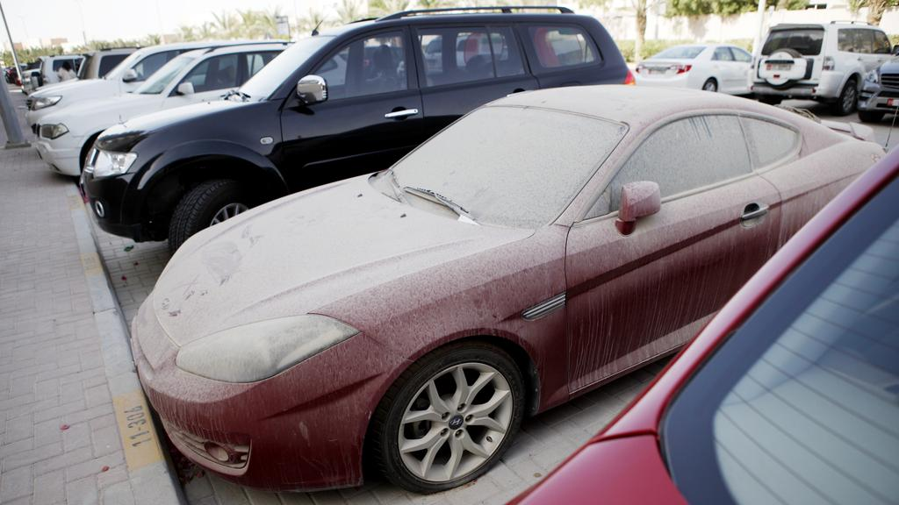

Shout About UAE

Privacy
It is illegal to invade the privacy of another person using any gadget and social network. The penalty for this is a minimum 6 months imprisonment and a fine of 100,000 to 500,000 AED. A case hit the headlines in 2016 when a woman in Ajman was accused of breaching her husband’s privacy after transferring photos from his phone to hers via WhatsApp. As well as being fined 150,000 dirhams, the woman was deported.Fundraising
Fundraising for charitable purposes is a very difficult process. Fundraising must first be approved by the Department for Islamic Affairs and Charitable Activities (IACAD), otherwise, fundraising violates the UAE Income Tax Act. This can lead to imprisonment, fines ranging from 250,000 to 500,000 and even deportation.Keep Your Car Clean!
With the frequent sandstorms in the UAE, you would think you’d be forgiven for having a dusty car. However, dirty cars are seen to be “disfiguring the city image and public health”. As a result, they are routinely towed away, with owners being slapped with fines and impound fees of 3,000 dirhams.How NOT To Keep Your Car Clean
While not washing your car can get you into serious trouble, washing your car “incorrectly” can, too. You are prohibited from washing your car in residential areas or employing labourers to wash your car. These casual car washes “distort the city’s beautiful image” as well as being environmentally hazardous, as the dirty water pollutes the streets and sewers. Instead, you have to take your car to proper facilities, such as those at petrol stations and the car parks of shopping malls.Taking Pictures...
...Of People
The UAE is very strict about preserving the privacy of individuals, and taking a picture of someone without their knowledge or consent is taken very seriously. According to the cybercrime laws, you can be fined up to 500,000 dirhams and jailed for six months for the offence, although in practice the sentences are much harsher, with various visitors having been deported....Of Accidents
Photographing in the United Arab Emirates is generally dangerous. Apart from the fact that photographing military buildings, courts and buildings are prohibited, it is also strictly forbidden to take a photo of an accident even aviation accidents. The penalty for this is from 50,000 to 3,000,000 and deportation.Eating or Drinking
Eating and drinking is completely banned on all forms of public transport and their stations, from metros and buses to pedestrian crossings. Getting caught consuming food and beverages can make your wallet 100 dirhams lighter.No Poppy Seeds
Poppy seeds are a source of opium and are a banned substance in the UAE. Being caught in possession of poppy seeds is a serious violation of the law and results in a jail sentence.Spreading Rumours
Possibly the weirdest offence on this list, a rumour is punishable under UAE law. Gossiping, especially on social media, can result in a three-year jail sentence and a fine of up to 1 million dirhams. Intending to crack down on those who “damage the social peace and public order” and pose a threat to “national peace”, the UAE has very strict laws about fake news.This was brought to light after the 2016 floods, when photos and videos of the damage caused by the heavy rain and strong winds were circulated widely on social media platforms. These were denounced as rumours, and it was declared that discussing the storm and sharing negative photos was illegal.